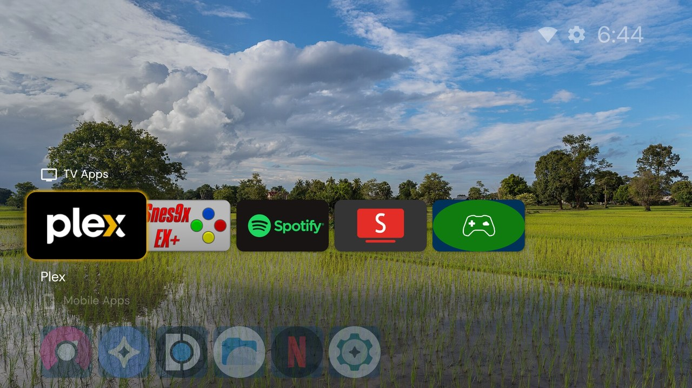
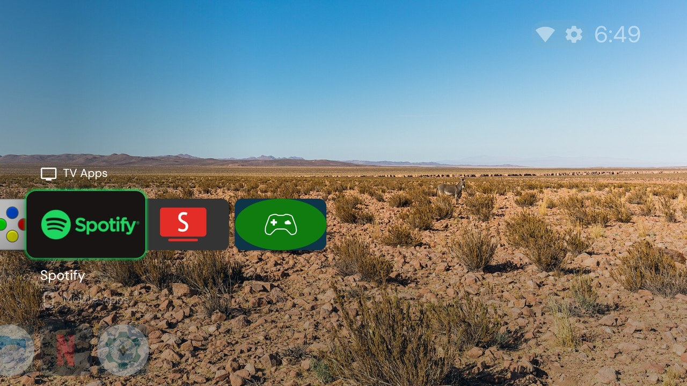

Software & TV UI
What is running on the Mersive Solstice Pod Gen3 (SP8096), how we turned a LineageOS phone build into a clean living-room TV box, and what is still left on the list.
msm_watchdog_v2 enabled. The only remaining hardware work is TC358840 HDMI input, plus optional custom theming and streaming apps.
Live screen captures & device details
These are direct screen captures straight off the Pod. We switched to Projectivy Launcher (ad-free, with a huge Android TV theming and wallpaper community), hid the phone status bar with immersive mode, and disabled the 12 leftover stock phone apps so the home screen stays clean.




4.4.302-podmin+)Minimal Linux 4.4.302 kernel with HDMI-CEC and hardware watchdog enabled.
Processor & GPU
Qualcomm Snapdragon 820 (APQ8096), quad-core Kryo (arm64-v8a), paired with an Adreno 530 GPU and Qualcomm Venus 4K hardware video decode.
Memory & storage
4 GB LPDDR4 RAM and 16 GB internal eMMC storage (around 6.6 GB free after Android 15 and starter TV apps).
What is running under the hood
Stock Solstice Pods ship with a locked-down Android 7.1.1 image on Linux 3.18. We replaced that with a clean Android 15 (LineageOS 22.2) userspace running on our own minimal Linux 4.4.302 kernel.
OS & GPU base (h850 donor)
The system image, Adreno 530 GPU drivers, and Qualcomm Venus 4K hardware video decoder come from official LineageOS 22.2 for the LG G5 (h850), which shares the same MSM8996 / APQ8096 silicon. Phone-only HALs (telephony, fingerprint, sensors, NFC, and camera) are stripped out.
Wireless HALs (gemini donor)
Native Android 15 QTI Wi-Fi and Bluetooth HALs are transplanted from official LineageOS 22.2 for the Xiaomi Mi 5 (gemini) so the Pod's QCA6174A / Rome wireless module works cleanly with our upstream ath10k_pci driver.
TV launcher & apps
Projectivy Launcher runs as the default TV home screen, with full support for custom 4K wallpapers, icon packs, and channel rows. Optional upstream apps like SmartTube, F-Droid, and FLauncher install cleanly from their official releases (no APKs are bundled in this repo).
Remote & input (HDMI-CEC + Flirc)
Native HDMI-CEC works over HDMI 1 via our lightweight pod-cec-daemon (fb1/cec → /dev/uinput) on logical address 8, so your TV remote drives the Pod without stealing inputs from game consoles. A Flirc USB Gen2 or any USB keyboard/mouse also works on the rear USB 3.0 ports.
What is working today
1Fast cold self-boot into Android 15 (~26 s)
Everything lives on internal eMMC (boot, recovery, and system) with msm_watchdog_v2 enabled. Plug in power and it boots straight into Projectivy Launcher with no PC connected.
2Automatic 4K@60 Hz HDMI hot-plug & TV input-switch reconnect
Driving TLMM GPIO 127 HIGH on boot wakes up native HDMI 1 at 3840x2160@60 and 4096x2160@60 (594 MHz pixel clock). Our supervised pod-hdmi-hotplug.sh service automatically enables the external HDMI display whenever you switch TV inputs (like from an Xbox back to the Pod) or hot-plug the cable, with no black screen or mirror prompt.
3Automatic Wi-Fi, Bluetooth A2DP, and 3.5 mm stereo audio
init.pod.wifi.rc loads ath10k_pci after sys.boot_completed=1 so 5 GHz Wi-Fi and Bluetooth A2DP come up cleanly on every boot, and J6 AUDIO delivers verified left + right stereo audio over SLIMBUS_6_RX.
4Clean TV defaults baked into the installer
installer/flash-new-pod.ps1 skips the phone setup wizard, disables the lockscreen and sleep timer, hides the phone status bar (policy_control immersive.status=*), disables 12 leftover phone apps, and sets Projectivy Launcher as the default home screen.
App compatibility (streaming & game streaming)
Because the Pod runs an unlocked custom Android 15 ROM without Google Android TV certification or Play Services (Widevine L3 software DRM instead of L1), open-source media and game-streaming apps run at full 4K@60 Hz hardware decode, while commercial DRM streamers have limits. No third-party APKs are bundled in this repo; users install official upstream releases or use Aptoide TV / F-Droid directly on the Pod.
| Category / App | Status | Notes |
|---|---|---|
| YouTube (SmartTube) | Works great | Full 4K@60 Hz with Venus hardware decode, ad-free, remote-friendly. |
| Xbox Remote Play / Cloud (Better xCloud) | Works great | Open-source Android TV app for streaming from a local Xbox or Xbox Cloud Gaming. |
| PC Game Streaming (Steam Link) | Works great | Low-latency streaming over Gigabit Ethernet with Bluetooth or USB controllers (install Steam Link via Aptoide TV). |
| Self-Hosted & Local Media (Plex, Jellyfin, Kodi, VLC) | Works great | Full 4K hardware video decode; Plex installs from the official Plex download, or use Jellyfin/Kodi from upstream releases. |
| App Stores (F-Droid & Aptoide TV) | Works great | Aptoide TV installs Android TV apps without needing Google Play Services. |
| Netflix | Limited (L3) | Official Android TV Netflix app blocks uncertified devices. Mobile/tablet APK can run capped at 480p/540p (Widevine L3) with pointer navigation. |
| Max (HBO), Prime Video, Hulu, Disney+ | Limited (L3) | Typically require Google Play Services / microG to sign in, cap at 720p/1080p on Widevine L3 (no 4K HDR), and some enforce Play Integrity checks. |
| Apple TV | Blocked (DRM) | Requires certified Widevine L1 and Google Play Services; refuses DRM playback on unlocked custom ROMs. |
What is left on the list
Custom themes & streaming apps
Projectivy Launcher is up and clean, ready for whatever custom 4K wallpapers, icon packs, and streaming apps you want to add from its theming community.
HDMI Input (TC358840)
The Toshiba TC358840 HDMI-in bridge has its device-tree nodes drafted and still needs kernel size headroom trimmed and its V4L2 capture driver brought up (or a zero-kernel-growth USB 3.0 UVC capture dongle).